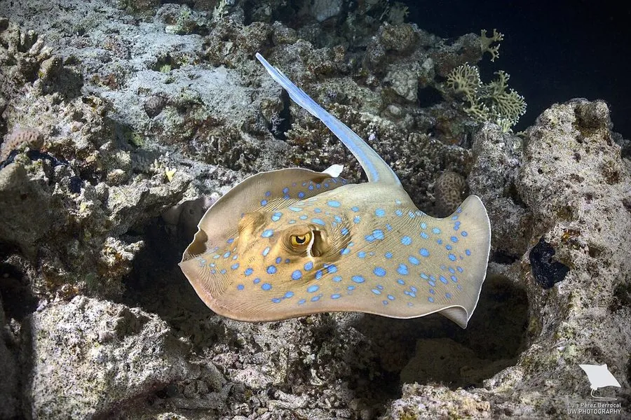

鱼类 · 动物界
蓝斑条尾魟 Taeniura lymma

印度洋与太平洋珊瑚礁的彩色魟类，黄褐色体盘上密布电光蓝斑，尾具蓝色条纹与带毒尾刺，日间藏在礁洞沙底休息。
- 分类
- 门脊索动物门纲软骨鱼纲目燕魟目科魟科属条尾魟属
- 栖息环境
- 热带珊瑚礁礁坪、礁洞、沙底与海草床，白天藏于缝隙或沙中
- 地理分布
- 印度洋与西太平洋热带海域，从东非、红海至日本南部、澳大利亚
- 保护级别
- IUCN 近危（NT）
物种志
蓝斑条尾魟体盘宽大呈圆形，成体盘宽 20–30 厘米，全长可达 70 厘米，体重 1–2 千克。体盘背面底色为黄褐、橄榄褐或灰褐，密布大小不一的电光蓝色圆斑，斑心有时为深色；腹面白色。尾部较粗，长度约为体盘的两倍，尾上具蓝白相间的纵纹，靠近尾基处有一至两枚锯齿状的毒刺，被刺中会引起剧痛与肿胀。
它们分布于印度洋与西太平洋的热带珊瑚礁，栖息于礁坪、礁洞、沙底与海草床，白天常成群躲在礁石缝隙或沙中，只露出尾部；夜间出来在沙底翻找蠕虫、虾、蟹与小型鱼类。它们对礁区地形熟悉，能在狭窄缝隙中穿行。繁殖为卵胎生，每胎数尾。由于体色艳丽，它在观赏水族贸易中需求较高，加之礁区破坏与误捕，局部种群受到压力。接触时须避开尾刺，被刺后应尽快就医。
形态与习性
- 体盘宽约 20–30 cm，全长可达 70 cm
- 体重约 1–2 kg
- 食性蠕虫、虾、蟹与小型鱼类
- 繁殖卵胎生，每胎数尾
- 尾刺尾基有一至两枚锯齿状毒刺，刺伤会引起剧痛
- 斑纹黄褐底密布电光蓝斑，尾部有蓝白纵纹
- 活动节律白天藏于礁缝或沙中，夜间在沙底觅食
趣味知识
- 蓝斑条尾魟身上的蓝斑像点了荧光漆，在礁区沙底上格外醒目。
- 它的尾刺带毒，被刺中会剧痛肿胀，潜水时切勿踩踏或抓尾。
- 白天它常把身体埋进沙里，只留一条带蓝纹的尾巴露在外面。